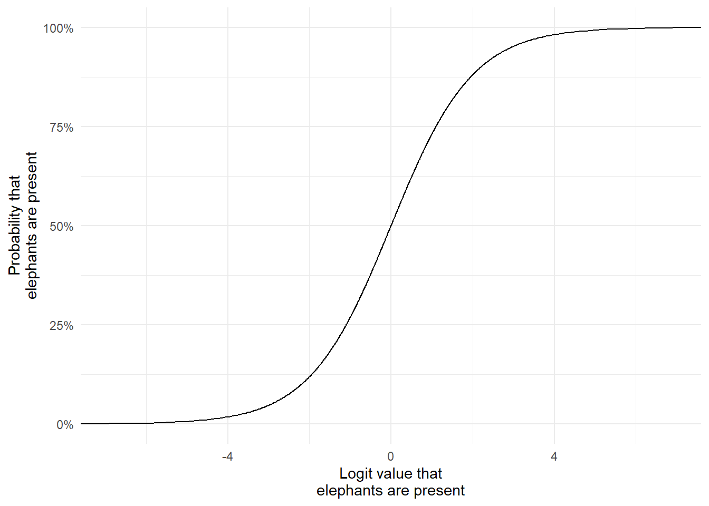
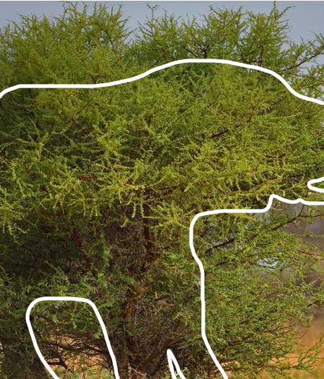

Where are species present and why are they present?
A fundamental question in ecology is; Where are species present, and why are they present there?
Zitong, in your case this may be; Why are roe deer present at site A but not site B? Is it because site A is closer to roads? If a site is close to a road what’s the probability roe deer are present? Is that very different to sites that are far away from a road?
What about features of the habitat? Are roe deer more likely if a site is forested versus agricultural?
Joe, in your case this may be; Why are pheasants present at site A but not site B? Is it related to how far away the nearest known release pen is? What does the relationship look like? If there is no relationship, what would that mean for policy?
What about the habitat makes pheasants more likely to occupy that site?
To act as motivation for this intro to occupancy models, let’s say we’re interested in understanding why are elephants present in the north of Etosha nature reserve in Namibia, but not in the south of the reserve? (As a side note, I’d recommend going there on holiday if you ever get the chance). Are elephants present in some parts of Etosha due to water availability? Is it related to food? Could predators play a role?
To find out, we need stats. As useful as gut feelings and intuition are, it’s not enough. Remember, statistics is how we get the evidenceto answer our research question using data.
The best statistical tool available for answering these types of questions are “occupancy modeling”. These were originally developed by Daryl MacKenzie et al in 2002 who wanted to deal with a subtle issue when trying to find animals (more on this in a second). The broad concept underlying MacKenzie’s occupancy modelling framework built on ideas that had already been developed for estimating survivalofindividual animals, called the Cormack-Jolly-Seber, or CJS, model. As a cool note; Cormack and Jolly independently developed this model while they worked in Aberdeen University - a vital and internationally renowned model was developed right here in bloody Aberdeen! In my entire time as an undergraduate student, then as a PhD in Aberdeen no one ever told me this (even though I was taught these methods in Aberdeen)! I only found out at a conference in France years after leaving Aberdeen. As a school, we should be far more proud of this than we are.
The problem that occupancy models solve is subtle, yet absolutely crucial. Occupancy models estimate the probability a species occupies a site, and also the probability that you see them.
Assume I want to determine where elephants are present in Etosha nature reserve in Namibia. I need data to answer this, so I decide to do ten elephant surveys in Etosha. Specifically, I go to visit these ten sites that are nicely spread throughout the park. At each site, whenever I spot an elephant I note down that elephants are present at that location. When I don’t see any elephants I record that elephants are absent at that location. Simple, right?
Let’s imagine we collect data across ten sites. Here’s what our dataset might look like:
When elephants is 1, it means elephants were seen at that site; when it’s 0, they were not. So, 1 indicates presence, and 0 indicates absence; at least for now.
To figure out the average probability that any one of my ten sites are occupied, I can run a Bernoulli Generalised Linear Model. The Bernoulli distribution (named after Jacob Bernoulli) generates values of 1 or 0, which is perfect for our binary presence–absence data.
The model would be:
\[
y_i \sim Bernoulli(p_i) \\
\]
\[
logit(p_i) = \beta_0
\]
Let’s go through these equations slowly:
\(y\) is our observation (elephants in the etosha dataset)
\(i\) is the index, here being which site the data was collected from
\(\sim\) means “generated according to” (or “our data is the same as would be generated by the following distribution”)
\(Bernoulli\) is a type of distribution that will generate either 0 or 1
\(p\) is the probability of success (i.e. there is \(p\) probability that we see an elephant). We can’t possibly know what \(p\) is when we collect the data, so we need to figure it out with statistics. (The \(i\) means each site could have a different probability - but we’re not doing that yet)
\(logit\) is the link function to ensure that \(p\) remains between 0% and 100%. Specifically, it’s a little bit of maths: \(log(\frac{p}{1-p})\), which is the natural log of the probability to succeed (\(p\)) divided by the probability to fail (\(1-p\)). More on this in a second.
\(\beta_0\) is the intercept. Since we haven’t included any covariates (yet), it captures the average logit value of elephant presence across all sites. When converted back from the logit scale, this will give us the average probability of elephant presence.
To understand how the logit link transforms probabilities, have a look at this figure. It maps the full range of probabilities (0% to 100%) to the logit scale.
Code
p <-seq(from =0, to =1, by =0.001)logit <-log(p/(1-p))dat <-data.frame(p, logit)library(ggplot2)ggplot(dat) +geom_line(aes(x = logit, y = p)) +labs(x ="Logit value that\nelephants are present",y ="Probability that\nelephants are present") +scale_y_continuous(labels = scales::percent) +theme_minimal()

Notice how as the probability approaches 0%, it never actually drops below it, even as the logit value keeps decreasing? And the same happens when it gets close to 100%. And that’s exactly what we want. The fact that logit values can range from \(-\infty\) to \(+\infty\) makes model fitting much easier: it turns a bounded probability into an unbounded scale, allows linear relationships with predictors, and ensures valid probabilities when converting predictions back. So even if our model estimates a logit value of 999 billion, it still maps to a probability of 100%. This ensures the natural bounds of probability, which is between 0% and 100%, are always respected.
If you want a bit more detail and intuition, here is an old lecture recording that covers the logit link function:
With that in mind, here’s how we’d fit our model in R. (Click Code to reveal the code.)
Code
mod <-glm(elephants ~1,data = etosha,family =binomial(link ="logit"))
This estimates \(\beta_0\), the average probability of elephant presence, but on the logit scale. We can see what it has been estimated as by looking at the summary of the model:
Code
summary(mod)
Call:
glm(formula = elephants ~ 1, family = binomial(link = "logit"),
data = etosha)
Coefficients:
Estimate Std. Error z value Pr(>|z|)
(Intercept) -1.3863 0.7906 -1.754 0.0795 .
---
Signif. codes: 0 '***' 0.001 '**' 0.01 '*' 0.05 '.' 0.1 ' ' 1
(Dispersion parameter for binomial family taken to be 1)
Null deviance: 10.008 on 9 degrees of freedom
Residual deviance: 10.008 on 9 degrees of freedom
AIC: 12.008
Number of Fisher Scoring iterations: 4
The estimate for (Intercept) (or \(\beta_0\)) is -1.3863. Now that we have an estimate for \(\beta_0\), we can plug it into our model:
\[
y_i \sim Bernoulli(p_i) \\
\]
\[
logit(p_i) = -1.3863
\]
To interpret this on the probability scale, we apply the inverse logit transformation using plogis() in R:
Code
plogis(-1.3863)
[1] 0.1999991
This gives us a probability of approximately 0.2, or 20%, meaning there’s a 20% chance a site is occupied by elephants.
Or does it?
Imperfect detection
That 20% estimate isn’t as straightforward as “there’s a 20% chance a site has elephants.” It’s actually the result of two probabilities being multiplied together. For us to detect an elephant and get a 1 in the etosha dataset, two things need to happen.
The elephant must obviously be there, with some probability. We can call this probability \(\psi\) (called “psi”, pronounced like “sigh”).
I also have to see the elephant, and no matter how good I am, that probability is almost certainly never going to be 100%. We normally call this probability \(p\).
So all of the 1’s in our etosha dataset are the result of succeeding in both of these probabilities. But a 0 could be the result from either of two failures:
either there truly were no elephants (\(1 - \psi\) - remember \(\psi\) is the probability there are elephants, e.g. 20% or 0.2, in which case \(1-0.2 = 0.8\) or 80% chance there are no elephants),
or elephants were present but we didn’t detect them (\(\psi \times (1 - p)\) - remember that \(p\) is the probability to detect a species, so if \(\psi = 0.2\) and \(p = 0.6\), then the probability to not see them is \(0.2 * (1 - 0.6) = 0.08\), or “there is an 8% chance elephants are present but not detected).
Fundamentally, the problem is that the data in the elephants column of our etosha dataset represents \(\psi \times p\), and not just \(\psi\) like we want.
For example, here’s a picture from BI3010 that you might remember. I’ve added a white line to show where the elephant is almost perfectly obscured by an acacia tree. If this was at one of our sites in etosha, then we’d have recorded 0 (or said Absent) despite it being there.

There’s no shortage of reasons why you might not see an elephant despite it being there. It can be as simple as the elephant was behind a bush when I checked that site. Or, if we were using cameras, it might be that the motion sensor didn’t trigger. Or it might be that the elephant was behind the camera. This process of an animal being present but us not seeing it reflects something called imperfect detection, i.e. just cause it’s there doesn’t mean we’re guaranteed to see it.
Imperfect detection is not an issue for the 1’s in our etosha data.
If you see an elephant, you know there was an elephant present. That’s easy and obvious.
The complication happens when we don’t detect an elephant; when elephants is 0.
That’s the key problem: a 0 in the data doesn’t always mean “no elephants”, it could just mean we missed them.
Occupancy models don’t ignore this, they’re built to handle it. They allow us to estimate two things separately: the probability that a site is occupied (\(\psi\)), and, if it is, the probability of detecting the species (\(p\)).
That’s why they’re such a powerful tool. Here’s how they do it.
Occupancy models
State model
The first part of an occupancy model is the state model, so called because it estimates the true state of each site: is the species present or absent?
\[
z_i \sim Bernoulli(\psi_i)\\
\]
\[
logit(\psi_i) = \beta_0
\]
This model probably looks similar. That’s because like the first model we spoke about further above, it’s also a \(Bernoulli\) GLM. But they differ in two important ways:
\(z\) is the true presence or absence of elephants in site \(i\) (this isn’t \(y\))
\(\psi\) is the probability to be present
That’s nice and all but just changing the labels doesn’t fix imperfect detection. To solve that, we need a second model: the observation model.
Observation model
The second GLM (which I’ll call the observation model) also looks remarkably similar:
It’s another \(Bernoulli\) GLM but with some crucial differences.
\(y\) is now the detection or not of an elephant. This is worth highlighting - \(y\) is not the presence or absence of elephants, it’s the detection of elephants if they’re present!
\(j\) represents which survey\(y\) was collected in, which inherently means we have multiple surveys, not just one like in our first GLM example above where \(i\) was a single (of ten) sites. This has implications for how we collect data, which we’ll come back to.
\(p\) is the probability to detect an elephant at site \(i\) in survey \(j\) (e.g. what is the probability to detect an elephant in site 1 in the third survey?)
Importantly, the probability to detect elephants (\(p\)) is multiplied by \(z\). What’s \(z\)? Well that’s the true occupancy state of that site from the state model. It’s this multiplication that allows the two models to “speak” to each other, and how we deal with imperfect detection; it ensures the observation process depends on whether the species is actually present.
If there are elephants in a site (\(z = 1\)), then \(p \times z = p \times 1 = p\). If elephants are absent from a site (\(z = 0\)), then \(p \times z = p \times 0 = 0\). This means you cannot detect elephants if they aren’t there. That’s blindingly obvious… It’s so dumb that most people don’t realise you need to specify it (I’ve heard people say: “surely any model can figure this out?”). But this stupidly simple logic is missing from our starting GLM! And a lot of research asking about where species are use a model equivalent to the very first GLM on this page.
Keep in mind that we don’t know \(z\). That’s the true occupancy state, a latent variable. Latent just means it’s unobserved: we can’t measure \(z\) directly in the field, but we can estimate it using the data we collect, much like we do with parameters.
That’s how occupancy models “know” that you can only detect elephants if they’re present, and that if they’re absent, you won’t detect them. It seems so obvious, yet this logic is missing from many models that treat non-detections as true absences.
And that’s the beauty of occupancy models. They handle the messy reality of ecological data (but can also be used in e.g. medicine), and that’s why they’re one of my favorite types of analysis.
The robust design and closure
So, we have a clever modeling framework, but how does it help when we go to a site and don’t see any elephants? How can we tell the difference between a true negative (the site was genuinely unoccupied) and a false negative (elephants were present, but we missed them)?
This is where the subscript \(j\) in the observation model becomes important. If you only visit a site once and don’t see any elephants, you’re left guessing. With no extra information, you can’t know whether the site was unoccupied or whether you simply failed to detect them.
But imagine I went back to that same site the next day. This time I do see elephants. We learn a few things from this. First, we know elephants are present at the site. Secondly, we learn that the first survey must have been a false negative - we just didn’t see elephants despite them being there.
Now imagine we scale this up by repeating this process where we now survey each of the ten sites three times. What might that data look like?
Code
set.seed(1988)psi <-0.5N <-10p <-0.8z <-rbinom(N, size =1, p = psi)y <-matrix(ncol =3, nrow = N, data =0)# Specifying y manually so it's easier to use in text# for (i in 1:N){ # For each site# for (j in 1:3) { # For each survey# y[i, j] <- rbinom(1, 1, prob = z[i] * p)# } # survey j# } # site iy[1,1] <-1y[8,3] <-1y[9,2] <-1etosha <-as.data.frame(y)etosha$site <-1:10colnames(etosha) <-c("Survey 1", "Survey 2", "Survey 3", "Site")etosha <- etosha[, c("Site", "Survey 1", "Survey 2", "Survey 3")]library(knitr)library(kableExtra)highlight_ones <-function(x) {ifelse(x ==1,cell_spec(x,color ="white",background ="darkred",bold =TRUE), x)}etosha_kbl <- etoshaetosha_kbl[, 2:4] <-lapply(etosha_kbl[, 2:4], highlight_ones)kable(etosha_kbl, "html", escape =FALSE) |>kable_styling(full_width =FALSE, bootstrap_options =c("striped", "hover"))
Site
Survey 1
Survey 2
Survey 3
1
1
0
0
2
0
0
0
3
0
0
0
4
0
0
0
5
0
0
0
6
0
0
0
7
0
0
0
8
0
0
1
9
0
1
0
10
0
0
0
By surveying each site three times, we gain crucial extra information to help account for imperfect detection.
We detect elephants in three sites:
Site 1 in survey 1
Site 8 in survey 3
Site 9 in survey 2
From this, we know there are definitely elephants in sites 1, 8 and 9. But we also learn some additional information that’s going to be very useful. In sites 1, 8 and 9, we see elephants only once out of three attempts in each site. Since we know elephants are present at those sites (we saw them at least once), and yet we only detected them in 1 out of 3 visits, we can estimate detection probability as roughly 30%.
Now let’s consider a site where we never detected elephants, say, site 2. What’s the chance that elephants were actually there, but we just missed them every time? Well, we’ve manually estimated our detection probability at 30% meaning the probability not to detect them is 100% - 30%, or 1-0.3, so the probability not to detect them on every single one of the three surveys is:
So even if elephants are present, there’s a 34% chance we’d miss them on all three surveys. That’s not trivial and it shows how easily a site could look empty even when it’s not.
This introduces a key assumption in occupancy models. But for that 30% detection probability to be meaningful, we must make an important assumption, called the closure assumption. This means we assume that if a site is occupied, it was occupied for all three surveys. In other words, the 0s in sites 1, 8, and 9 were false negatives and not times when the elephants just happened to leave that site for a day. For example, we assume the elephants in site 8 didn’t just wander in before the third survey; they were there during the first and second surveys too.
The assumption of closure
This is known as the assumption of closure (or closure assumption). It’s often misunderstood as meaning the site is physically “closed” off by something like a fence to prevent animals from entering and leaving. That’s not what it means. In occupancy models, closure means the population is demographically closed during the survey period. If a species is present at the first survey, it remains present for all subsequent surveys.
Zitong and Joe, this has two important implications for your fieldwork:
You need to survey each site on multiple occasions, i.e. you need \(J\) surveys. If you’re using camera traps, this means leaving the camera in situ for more than one sampling period.
You’re completely free to define the sampling period (hour/day/week), but it must be short enough that if your species is present at the first survey, it’s still present at the last.
And, critically, the full survey period should not be so long that the species could realistically disappear from the site (e.g. due to death, migration, or disturbance) or recolonise it.
In practice, you need at least three survey occasions to estimate detection probability reliably. These could be three days, three 12-hour periods—whatever matches your chosen sampling unit. More surveys are great (e.g. two weeks of camera trapping), but be cautious: surveying over too long a period risks violating closure if the species could move in or out of the site (or go locally extinct or recolonise a vacant site).
This approach, repeatedly surveying the same site at least three times within a “closed” window, is called the robust design. It’s the backbone of reliable single-season occupancy modeling, and something you should aim to implement whenever possible.
The data
I’m going to simulate data for an occupancy model to show you how your data should be structured, and to give you something to practise with. We’ll use the spOccupancy package in R which you’ll also use in your own analysis. It stands for spatial occupancy, but we’ll focus on the occupancy part for now and save the spatial component for later.
On the next page (Occupancy Models: Covariates), I’ll explain how to include environmental or site-level covariates, like distance to a road or release pen. For now, we’ll leave those out to keep things simple.
Each column represents a survey occasion (we have three here), and each row corresponds to a site (ten total). Your dataset might have more or fewer rows/columns depending on your study, but the core format, called a detection history matrix or just detection matrix, will look something like this.
Let’s do the same thing that we did above, but with this more sensibly simulated dataset.
In sites 3, 4, and 8, we never detect elephants. With no further information, we can’t say whether that’s because they were truly absent, or present but undetected.
In sites 1, 2, 5, 6, 7, 9, and 10, we see elephants at least once, so we know for sure that they are present there.
In site 5, the detection history is 0, 1, 1. So, if elephants were present for all surveys (closure assumed), we detected them in 2 out of 3 attempts, suggesting an estimated detection probability of about 66%.
Armed with this 66% detection probability, we can ask: If elephants were present at a site, what’s the chance we’d fail to detect them on all surveys?
Let’s assume elephants were present at site 3. The probability of not detecting them on a single day is:
\[1-0.66 = 0.34\]
Then the probability of failing to detect them three days in a row is:
So, if elephants were present, there’s only a 4% chance we’d miss them all three times. That’s pretty unlikely, so we might reasonably infer that site 3 was truly unoccupied.
And since this is simulated data, we can check the truth; we know whether elephants were really there or not.
Code
dat$z[3]
[1] 0
We see that elephants were absent in site 5. The output above should read [1] 0, which means absence. Our guess was correct. It was more likely that elephants were simply not there, rather than being present and somehow undetected every time.
This is essentially how occupancy models work. But instead of using a single site and a rough estimate of detection probability, we use all of our data across all sites and surveys. The occupancy model then estimates both the probability that a site is occupied and the probability of detecting the species when it is present.
Data preparation
Before getting to running a fancy model, we need to get our dataset organised in a format that works for spOccupancy. Unlike linear models or GLMs, which typically use a simple data.frame to supply the data, spOccupancy expects a list object. This list can (and often will) contain multiple datasets and nested lists.
For the basic model we’ll fit below, we only need to include the detection history matrix - the one we used above. We’ll store this in a list called etosha.
So at this stage, we’re simply placing our existing detection history matrix into a list. It might seem like an unnecessary step now, but it becomes essential when we expand to more complex models with covariates, spatial structure, or hierarchical components.
Here’s the detection history matrix again, which we’ll use as input:
Creating the etosha list is actually quite straightforward. We use the list() function in R to build the list and include only our detection history matrix (for now).
In this example, the detection data is stored as dat$y (since it was simulated), and we’ll assign that to an element called y inside our new list. By convention we call it y to match the notation from our model equations above.
An important note, even though I’m using dat$y in the code here, for your own data, you will most likely have a single dataset that you would load in with e.g. read.csv().
If you want to see the code, click the Code button to the left.
Code
etosha <-list(y = dat$y)
Fitting the model
Below we’re going to fit the simplest version of an occupancy model that we can, specifically:
\[z_i \sim Bernoulli(\psi_i)\\\]
\[logit(\psi_i) = \beta_0\\\]
\[y_{i,j} \sim Bernoulli(p_{i,j} \times z_i)\\\]
\[logit(p_{i,j}) = \alpha_0\]
This version of the model only has two average probabilities. One for the average probability that elephants occupy a site (\(\beta_0\), which is fit on the logit link function), and another for the average probability of detecting elephants if they are present (\(\alpha_0\), also fit on the logit link function).
The model is not fit using the so-called frequentist framework. Instead, it uses the Bayesian framework. I’ll gloss over what frequentist and Bayesian mean (and how they differ) for now, except to note that maybe 95% (\(\leftarrow\) lousy stats joke) of scientists use the frequentist framework. Not by coincidence, it’s also the framework most commonly taught to students (which is partly why it’s so widely used).
For your future, keep in mind that many employers, rightly or wrongly, see Bayesian statistics as fancier and more sophisticated. It’s something worth including in your CV if you apply for quantitative jobs or PhDs.
The code below uses the PGOcc() function from the spOccupancy package to fit a single species, single season occupancy model with no explanatory variables.
Code
fit <-PGOcc(# The state model (i.e. what % that elephants are present?)# ~ 1 means we want an intercept only model (no covariates)occ.formula =~1, # The observation model (i.e. what % that we see elephants if present?)# ~ 1 means the same as above - intercept onlydet.formula =~1, # Our carefully formatted datasetdata = etosha, # Details to get the machinery to run that we'll ignore for nown.chains =4,n.samples =2000,n.burn =200,verbose =FALSE)
Having fit the model, we can inspect the parameter estimates:
Code
summary(fit)
Call:
PGOcc(occ.formula = ~1, det.formula = ~1, data = etosha, n.samples = 2000,
verbose = FALSE, n.burn = 200, n.chains = 4)
Samples per Chain: 2000
Burn-in: 200
Thinning Rate: 1
Number of Chains: 4
Total Posterior Samples: 7200
Run Time (min): 0.0025
Occurrence (logit scale):
Mean SD 2.5% 50% 97.5% Rhat ESS
(Intercept) 1.4601 0.9914 -0.1904 1.3426 3.7274 1.0065 1576
Detection (logit scale):
Mean SD 2.5% 50% 97.5% Rhat ESS
(Intercept) -0.1952 0.4643 -1.0869 -0.2025 0.7266 1.0039 3274
There’s a lot of information in this summary, but we only really care about a few things.
Occurrence (logit scale). This refers to the state model, which estimates the probability that an elephant is present at any given site.
Detection (logit scale). This refers to the observation model, which estimates the probability that an elephant is detected in any given survey, assuming they were present.
The (Intercept) rows contains all the information on the intercept for the respective model. Since we only included an intercept in both models, this is the only row for both the state and observation models.
Mean is the mean of the posterior. This is Bayesian terminology for the distribution of the parameter estimate. (It’s a bit more complicated than that, but we’ll return to Bayesian ideas later.)
SD is the standard deviation of the posterior.
2.5% is the lower bound of the 95% credible interval. This is not a confidence interval, but for now you can think of it as similar.
50% is the median of the posterior.
97.5% is the upper bound of the 95% credible interval.
Rhat is likely new to you. It helps assess whether the model had any issues estimating the posterior. If Rhat is close to 1, it suggests no issues were detected. (Note: this does not guarantee the model is correct, only that it appears stable.) If Rhat is higher than about 1.1, the model may not have converged properly and might need to be adjusted.
ESS stands for Effective Sample Size. This is another Bayesian diagnostic. For now, we want this value to be in the hundreds or ideally thousands. A low ESS suggests estimation problems and might also require model adjustments.
In our case, everything looks fine. The Rhat values are close to 1 and the ESS values are all in the thousands. We can now move on to interpreting the results biologically.
Interpreting the results
So what do our results mean?
For the state model (labelled Occurrence in the spOccupancy output), the estimated mean is 1.4601. But we would expect this to be a probability, right? Remember, we are fitting a Bernoulli GLM with a logit link. That means 1.4601 is on the logit scale.
We can convert this logit value to a probability using the same inverse logit function we used earlier.
Code
plogis(1.4601)
[1] 0.811548
When we do that, we get a value of approximately 0.81, or 81%. So, the model estimates there is about an 80% chance that any given site is occupied by elephants.
Now compare that to the observed data. In our detection history, we only saw elephants in 70% of the sites. That might seem inconsistent at first, but this is exactly where the detection part of the model helps us. Because we do not have perfect detection, we expect the true occupancy rate to be higher than what the raw data suggests.
What about detection probability?
The mean of the intercept for detection is estimated (also on the logit scale) as -0.1952.
Code
plogis(-0.1952)
[1] 0.4513544
Converting that to a probability gives us about 45%. So, on average, if an elephant is present at a site, we have about a 45% chance of detecting it during any one survey.
If our detection probability is 45%, then the chance of missing an elephant on all three visits to a site is:
\[
(1 - 0.45)^3 = 0.55^3 = 0.17 = 17\%
\]
That is not a huge chance, but it is not trivial either. In other words, even when elephants are present, there is a meaningful chance we might not see them at all in the data.
The key takeaway is this: detection probability is not 100%. That single fact makes the Bernoulli GLM we started with right at the start of this page inappropriate. Because it ignores imperfect detection, it produces unreliable estimates. The occupancy model, by contrast, accounts for detection error and gives us a more trustworthy result.
What next?
There are three big elements this document has not yet covered.
1. Including covariates
Just like in the modelling you did in BI3010, we can add covariates that we believe influence either the state model (why elephants are present) or the detection model (how likely we are to see them).
Do you think rainfall affects the likelihood of detecting elephants? Then include rainfall as a covariate in the detection model. Do you think distance to water affects where elephants choose to be? Then include that in the state model. This lets us link occupancy and detection to real ecological or observational factors.
2. Bayesian statistics
Very simply, Bayesian statistics allows us to include our prior understanding of the world into the model. For example, we might believe that a reasonable range for the probability of elephant presence is between 20% and 90%. That is, we don’t think it is likely that none of the sites are occupied, and we also don’t believe all of them are.
These informed guesses are formally called priors. Priors are the foundation of Bayesian inference and do not exist in frequentist statistics. They allow us to combine prior knowledge with the data we collect to produce more informed estimates.
3. Spatial autocorrelation
Imagine one site is an elephant utopia. It has everything an elephant could ever want and is almost certainly occupied. Now consider a nearby site that is less ideal. On its own, we might expect a lower probability of occupancy. But because it is close to elephant utopia, it is more likely to be occupied than its local features alone would suggest.
This is an example of spatial autocorrelation. The occupancy of one site can influence the occupancy of nearby sites, depending on how close they are. If we ignore spatial autocorrelation, we risk drawing misleading conclusions. For example, we might falsely assume that the non-utopian site is attractive to elephants when in fact, its occupancy is driven by its proximity to a better site.
Failing to account for spatial structure can lead to flawed inference. Fortunately, occupancy models can be extended to handle this, and the spOccupancy package is designed with this in mind.
Lecture recording
Below is an old recording of a lecture (from during the COVID lockdown) I gave that covers some of these ideas (in slightly less detail).